컴퓨터응용가공산업기사 (2017-05-07 기출문제)
1과목: 기계가공법 및 안전관리
1. 다음 그림과 같이 피측정물의 구면을 측정할 때 다이얼 게이지의 눈금이 0.5mm 움직이면 구면의 반지름(mm)은 얼마인가? (단, 다이얼 게이지 측정자로부터 구면계의 다리까지의 거리는 20 mm 이다.)
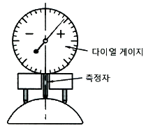
- 100.25
- 200.25
- 300.25
- 400.25
(정답률: 54%)

2. 풀리(pulley)의 보스(boss)에 키 홈을 가공하려 할 때 사용되는 공작기계는?
- 보링 머신
- 호빙 머신
- 드릴링 머신
- 브로칭 머신
(정답률: 73%)
3. 입자를 이용한 가공법이 아닌 것은?
- 래핑
- 브로칭
- 배럴가공
- 액체 호닝
(정답률: 74%)
4. 심압대의 편위량을 구하는 식으로 옳은 것은? (단, X : 심압대 편위량이다.)
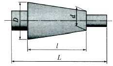
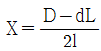
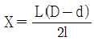
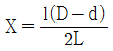
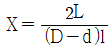
(정답률: 68%)
5. 래핑작업에 사용하는 랩제의 종류가 아닌 것은?
- 흑연
- 산화크롬
- 탄화규소
- 산화알루미나
(정답률: 64%)
6. 다이얼 게이지 기어의 백 래시(back lash)로 인해 발생하는 오차는?
- 인접 오차
- 지시 오차
- 진동 오차
- 되돌림 오차
(정답률: 78%)
7. 비교 측정하는 방식의 측정기는?
- 측장기
- 마이크로미터
- 다이얼 게이지
- 버니어 캘리퍼스
(정답률: 72%)
8. 선반에서 할 수 없는 작업은?
- 나사 가공
- 널링 가공
- 테이퍼 가공
- 스플라인 홈 가공
(정답률: 78%)
9. 범용 밀링 머신으로 할 수 없는 가공은?
- T홈 가공
- 평면 가공
- 수나사 가공
- 더브테일 가공
(정답률: 77%)
10. 일반적으로 센터드릴에서 사용되는 각도가 아닌 것은?
- 45°
- 60°
- 75°
- 90°
(정답률: 55%)
11. 트위스트 드릴은 절삭날이 각도에 중심에 가까울수록 절삭작용이 나쁘게 되기 때문에 이를 개선하기 위해 드릴의 웨브부분을 연삭하는 것은?
- 디닝(thinning)
- 트루잉(truing)
- 드레싱(dressing)
- 글레이징(glazing)
(정답률: 57%)
12. 센터리스 연삭에 대한 설명으로 틀린 것은?
- 가늘고 긴 가공물의 연삭에 적합하다.
- 긴 홈이 있는 가공물의 연삭에 적합하다.
- 다른 연삭기에 비해 연삭여유가 작아도 된다.
- 센터가 필요치 않아 센터 구멍을 가공할 필요가 없다.
(정답률: 67%)
13. 박스 지그(box jig)의 사용처로 옳은 것은?
- 드릴로 대량 생산을 할 때
- 선반으로 크랭크 절삭을 할 때
- 연삭기로 테이터 작업을 할 때
- 밀링으로 평면 절삭작업을 할 때
(정답률: 71%)
14. 연삭작업에 대한 설명으로 적절하지 않은 것은?
- 거친 연삭을 할 때에는 연삭 깊이를 얕게 주도록 한다.
- 연질 가공물을 연삭할 때는 결합도가 높은 숯돌이 적합하다.
- 다듬질 연삭을 할 때는 고운 입도의 연삭숫돌을 사용한다.
- 강의 거친 연삭에서 공작물 1회전마다 숫돌바퀴 폭의 1/2 ~ 3/4 으로 이송한다.
(정답률: 55%)
15. 미끄러짐을 방지하기 위한 손잡이나 외관을 좋게 하기 위하여 사용되는 다음 그림과 같은 선반 가공법은?
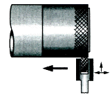
- 나사 가공
- 널링 가공
- 총형 가공
- 다듬질 가공
(정답률: 89%)
16. 수기가공 할 때 작업안전 수칙으로 옳은 것은?
- 바이스를 사용할 때는 조에 기름을 충분히 묻히고 사용한다.
- 드릴가공을 할 때에는 장갑을 착용하여 단단하고 위험한 칩으로부터 손을 보호한다.
- 금긋기 작업을 하는 이유는 주로 절단을 할 때에 절삭성이 좋아지기 위함이다.
- 탭 작업 시에는 칩이 원활하게 배출일 될 수 있도록 후퇴와 전진을 번갈아 가면서 점진적으로 수행한다.
(정답률: 71%)
17. 밀링 머신에서 절삭공구를 고정하는데 사용되는 부속장치가 아닌 것은?
- 아버(arbor)
- 콜릿(collet)
- 새들(saddle)
- 어댑터(adapter)
(정답률: 72%)
18. 공기 마이크로미터에 대한 설명으로 틀린 것은?
- 압축 공기원이 필요하다.
- 비교 측정기로 1개의 마스터로 측정이 가능하다.
- 타원, 테이퍼, 편심 등의 측정을 간단히 할 수 있다.
- 확대 기구에 기계적 요소가 없기 때문에 장시간 고정도를 유지할 수 있다.
(정답률: 68%)
19. 밀링 머신에서 테이블의 이송속도(f)를 구하는 식으로 옳은 것은? (단, fz : 1개의 날 당 이송(mm), z : 커터의 날 수, n : 커터의 회전수(rpm) 이다.)
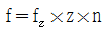
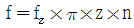
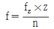
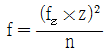
(정답률: 82%)
20. 산화알루미늄(Al2O3) 분말을 주성분으로 마그네슘(Mg), 규소(Si)등의 산화물과 소량의 다른 원소를 첨가하여 소결한 절삭공구의 재료는?
- CBN
- 서멧
- 세라믹
- 다이아몬드
(정답률: 72%)
2과목: 기계설계 및 기계재료
21. 백주철을 고온에서 장시간 열처리하여 시멘타이트 조직을 분해하거나 소실시켜 인성 또는 연성을 개선한 주철은?
- 가단 주철
- 칠드 주철
- 합금 주철
- 구상흑연 주철
(정답률: 61%)
22. 플라스틱 성형재료 중 열가소성 수지는?
- 페놀 수지
- 요소 수지
- 아크릴 수지
- 멜라민 수지
(정답률: 57%)
23. 구리 및 구리합금에 관한 설명으로 틀린 것은?
- Cu의 용융점은 약 1083℃ 이다.
- 문쯔메탈은 60%Cu + 40%Sn 합금이다.
- 유연하고 전연성이 좋으므로 가공이 용이하다.
- 부식성 물질이 용존하는 수용액 내에 있는 황동은 탈아연 현상이 나타난다.
(정답률: 52%)
24. 고속도강을 담금질 한 후 뜨임하게 되면 일어나는 현상은?
- 경년현상이 일어난다.
- 자연균열이 일어난다.
- 2차경화가 일어난다.
- 응력부식균열이 일어난다.
(정답률: 61%)
25. 다음 중 알루미늄합금이 아닌 것은?
- 라우탈
- 실루민
- 두랄루민
- 화이트메탈
(정답률: 71%)
26. 강의 표면에 붕소(B)를 침투시키는 처리 방법은?
- 세라다이징
- 칼로라이징
- 크로마이징
- 보로나이징
(정답률: 79%)
27. 상온에서 순철(α철)의 격자구조는?
- FCC
- CPH
- BCC
- CP
(정답률: 55%)
28. 금속의 일반적인 특성이 아닌 것은?
- 연성 및 전성이 좋다.
- 열과 전기의 부도체이다.
- 금속적 광택을 가지고 있다.
- 고체 상태에서 결정구조를 갖는다.
(정답률: 78%)
29. 오일리스 베어링(oilless bearing) 의 특징을 설명한 것으로 틀린 것은?
- 단공질이므로 강인성이 높다.
- 무급유 베어링으로 사용한다.
- 대부분 분말 야금법으로 제조한다.
- 동계에는 Cu-Sn-C합금이 있다.
(정답률: 52%)
30. 일반적으로 탄소강에서 탄소량이 증가할수록 증가하는 성질은?
- 비중
- 열팽창계수
- 전기저항
- 열전도도
(정답률: 68%)
31. 지름이 10mm 인 시험편에 600N의 인장력이 작용한다고 할 때 이 시험편에 발생하는 인장응력은 약 몇 MPa 인가?
- 95.2
- 76.4
- 7.64
- 9.52
(정답률: 45%)
32. 스프링에 150N의 하중을 가했을 때 발생하는 최대전단응력이 400 MPa 이었다. 스프링 지수(C)는 10이라고 할 때, 스프링 소선의 지름은 약 몇 mm 인가? (단, 응력수정계수
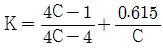
를 적용한다.)- 3.3
- 4.8
- 7.5
- 12.6
(정답률: 21%)
33. 맞물린 한 쌍의 인벌류트 기어에서 피치원의 공통접선과 맞물리는 부위에 힘이 작용하는 작용선이 이루는 각도를 무엇이라고 하는가?
- 중심각
- 접선각
- 전위각
- 압력각
(정답률: 49%)
34. 지름 45mm의 축이 200rpm 으로 회전하고 있다. 이 축은 길이 1m에 대하여 1/4° 의 비틀림 각이 발생한다고 할 때 약 몇 kW 의 동력을 전달하고 있는가? (단, 축 재료의 가로탄성계수는 84 GPa 이다.)
- 2.1
- 2.6
- 3.1
- 3.6
(정답률: 33%)
35. 정(Dhisel) 등의 공구를 사용하여 리벳머리의 주위와 강판의 가장자리를 두드리는 작업을 코킹(caulking)이라 하는데, 이러한 작업을 실시하는 목적으로 적절한 것은?
- 리벳팅 작업에 있어서 강판의 강도를 크게 하기 위해서
- 리벳팅 작업에 있어서 기밀을 유지하기 위하여
- 리벳팅 작업 중 파손되 부분을 수정하기 위하여
- 리벳이 들어갈 구멍을 뚫기 위하여
(정답률: 75%)
36. 축 방향으로 보스를 미끄럼 운동시킬 필요가 있을 때 사용하는 키는?
- 페더(feather) 키
- 반달(woodruff) 키
- 성크(sunk) 키
- 안장(saddle) 키
(정답률: 47%)
37. 어느 브레이크에서 제동동력이 3kW 이고, 브레이크 용량(brake capacity)을 0.8 N/mm2·m/s 라고 할 때, 브레이크 마찰면적의 크기는 약 몇 mm2 인가?
- 3200
- 2250
- 5500
- 3750
(정답률: 42%)
38. 420 rpm 으로 16.20 kN 의 하중을 받고 있는 엔드저널의 지름(d)과 길이(ℓ)는? (단, 베어링 작용압력은 1 N/mm2, 폭 지름비 ℓ/d=2 이다.)
- d = 90 mm, ℓ = 180 mm
- d = 85 mm, ℓ = 170 mm
- d = 80 mm, ℓ = 160 mm
- d = 75 mm, ℓ = 150 mm
(정답률: 39%)
39. 평벨트 전동장치와 비교하여 V-벨트 전동장치에 대한 설명으로 옳지 않은 것은?
- 접촉 면적이 넓으므로 비교적 큰 동력을 전달한다.
- 장력이 커서 베어링에 걸리는 하중이 큰 편이다.
- 미끄럼이 작고 속도비가 크다.
- 바로걸기로만 사용이 가능하다.
(정답률: 57%)
40. M22볼트(골지름 19.294mm)가 그림과 같이 2장의 강판을 고정하고 있다. 체결 볼트의 허용전단응력이 36.15 MPa 라 하면 최대 몇 kN까지의 하중(P)을 견딜 수 있는가?
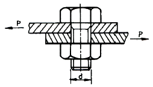
- 3.21
- 7.54
- 10.57
- 11.48
(정답률: 40%)
3과목: 컴퓨터응용가공
41. 다음 중 곡면에 관한 일반적인 설명으로 틀린 것은?
- 베지어(Bezier)곡면의 차수는 조정점의 개수에 의해 좌우된다.
- 곡면식들은 필요해 의해 그 미분 값들을 자주 계산할 필요가 있다.
- 쿤스 패치(Conns patch)는 패치를 구성하는 2개의 구석 점들을 선형 보간하여 전체 곡면식을 얻는다.
- 최근의 솔리드 모델링 시스템은 사용되는 모든 곡면을 하나의 NURB 곡면식 형태로 저장하기도 한다.
(정답률: 67%)
42. 다음 중 원뿔에 의한 원추곡선이 아닌 것은?
- 3차 스플라인 곡선
- 쌍곡선
- 포물선
- 타원
(정답률: 63%)
43. 다음 중 P0, P1, P2의 조정점을 갖고 오더가 3인 비주기적 귱닐 B-spline 곡선의 식을 다항식 형태로 유도한 것으로 적절한 것은?
- P(u) = u2P0 + 2u(1-u)P1 + (1-u)2P2
- P(u) = (1-u)2P0 + 2u(1-u)P1 + u2P2
- P(u) = u2P0 - 2u(1-u)P1 + (1-u)2P2
- P(u) = (1-u)2P0 - 2u(1-u)P1 + u2P2
(정답률: 44%)
44. 형상을 구성하고 있는 면과 면사이의 위상기하학적인 결합관계를 정의함으로써 3차원 물체를 표현하는 방식은?
- CGG 방식
- B-Rep 방식
- Hybrid 방식
- Wireframe 방식
(정답률: 53%)
45. 제품개발의 초기개념 설계단계에서 해당 제품의 폐기에 이르기까지 전체 제품 라이프 사이클의 모든 것(품질, 원가, 일정, 고객의 요구사항 등)을 감안하여 협업적으로 개발하도록 하는 시스템 공학적 제품개발 전략은?
- 가치분석(Value Analysis)
- 가치공학(Value Engineering)
- 동시공학(Concurrent Engineering)
- 총괄적 품질관리(Total Quality Control)
(정답률: 50%)
46. DNC(Direct Numerical Control)의 설명으로 옳은 것은?
- 여러 대의 NC기계를 한 대의 컴퓨터에 연결시켜 제어
- NC 공작기계 내에 저장되어 있는 표준부프로그램(subroutine)
- 컴퓨터(마이크로프로세서)를 내장한 NC공작기계
- 컴퓨터의 핵심기능을 수행하는 중앙 연산 처리장치
(정답률: 84%)
47. 컴퓨터를 이용한 공정계획의 약자로 맞는 것은?
- CAP
- MRP
- CAT
- CAPP
(정답률: 66%)
48. 다음 중 일반적인 공구경로 시뮬레이션을 통해 파트 프로그래머가 직접 시각적으로 확인하기 어려운 것은?
- 공구가 공작물의 필요한 부분까지 제거하는지의 여부
- 공구가 어떤 클램프(clamp)나 고정구(fixture)와 충돌하는지의 여부
- 공구가 포켓(pocket)의 바닥이나 측면, 리브(lib)를 관통하여 지나가는지의 여부
- 공구에 어떤 힘이 가해지며, 공구경로가 공구수명에 효율적인지의 여부
(정답률: 79%)
49. 3차원 솔리드 모델링 과정에서 사용되는 primitive 요소가 아닌 것은?
- 구
- 원뿔
- 삼각면
- 육면체
(정답률: 70%)
50. 일반적인 CAD 시스템에서 하나의 원(circle)을 정의하는 방법으로 가장 거리가 먼 것은?
- 중심과 반지름으로 표시
- 중심과 원주상의 한 점으로 표시
- 한 점과 수평선과의 각도로 표시
- 일직선상에 놓여 있지 않은 임의의 3개의 점으로 표시
(정답률: 59%)
51. x방향으로 2배 축소, y방향으로 2배 확대를 나타내는 변환 행렬 TH는?
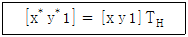
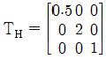
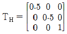
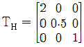
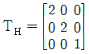
(정답률: 62%)
52. 다음 중 블렌딩 함수로 베른스타인(Bernstein) 다항식을 사용한 곡선 방정식은?
- NURBS 곡선
- B-spline 곡선
- 베지어(Bezier) 곡선
- 퍼거슨(Ferguson) 곡선
(정답률: 63%)
53. 터빈 블레이드나 선박의 스크루(screw), 항공기 부품 등을 가공할 때 사용하는 가장 적합한 가공 방식은?
- 2.5축 가공
- 3축 가공
- 4축 가공
- 5축 가공
(정답률: 79%)
54. 그래픽데이터 표준규격인 IGES(Intitial Graphics Exchanges Specification)파일 구조가 아닌 것은?
- Start 섹션
- Global 섹션
- Blocks 섹션
- Directory 섹션
(정답률: 56%)
55. 다음 중 CNC공작기계의 가공에 필요한 NC코드의 생성에 가장 적절한 모델은?
- 커브(curve) 모델
- 곡면(surface) 모델
- 유한요소(FEM) 모델
- 와이어프레임(wireframe) 모델
(정답률: 57%)
56. 중심(-10, 5), 반지름 5인 원의 방정식은?
- (x - 10)2 + (y + 5)2 = 5
- (x + 10)2 + (y - 5)2 = 5
- (x - 10)2 + (y + 5)2 = 25
- (x + 10)2 + (y - 5)2 = 25
(정답률: 54%)
57. 솔리드 모델(Solid model)에 대한 설명으로 틀린 것은?
- 데이터의 처리가 많아진다.
- 물리적 성질 등의 계산이 불가능하다.
- 이동·회전 등을 통하여 정확한 형상파악을 할 수 있다.
- Boolean 연산(합, 차, 적)을 통하여 복잡한 형상 표현도 가능하다.
(정답률: 79%)
58. 쾌속조형(RP)에 관한 일반적인 설명 중 틀린 것은?
- 클램프, 지그, 또는 고정구를 고려할 필요가 없다.
- 특징형상 기반 설계나 특징형상 인식이 필요하다.
- 물체를 만들기 위해 단면 데이터를 생성하여 사용한다.
- 재료를 제거하는 것이 아니라 재료를 더해 나가는 공정이다.
(정답률: 36%)
59. 래스터 디스플레이 장치를 이용하여 흑백이 아닌 칼라 색을 표현하는데 필요한 최소한의 비트 플레인(bit plane)은 몇 개인가?
- 1
- 3
- 5
- 7
(정답률: 72%)
60. 와이어프레임(wireframe) 모델의 특징으로 틀린 것은?
- 물리적 성질의 계산이 가능하다.
- 3면 투시도의 작성이 용이하다.
- 숨은선 제거가 불가능하다.
- 데이터 구조가 간단하다.
(정답률: 76%)
4과목: 기계제도 및 CNC공작법
61. 그림과 같이 하나의 그림으로 정육면체의 세 면 중의 한 면 만을 중점적으로 엄밀·정확하게 표현하는 것으로, 캐비닛도가 이에 해당하는 투상법은?
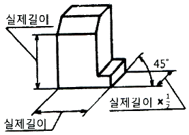
- 사투상법
- 등각투상법
- 정투상법
- 투시도법
(정답률: 54%)
62. 가공 방법의 약호 중 FR이 뜻하는 것은?
- 브로칭 가공
- 호닝 가공
- 줄 다듬질
- 리밍 가공
(정답률: 71%)
63. 특수 가공하는 부분이나 특별한 요구사항을 적용하도록 범위를 지정하는데 사용되는 선의 종류는?
- 가는 1점 쇄선
- 가는 2점 쇄선
- 굵은 실선
- 굵은 1점 쇄선
(정답률: 59%)
64. 기하학적 형상공차를 사용하는 이유로 거리가 먼 것은?
- 최대 생산 공차를 주어 생산성을 높인다.
- 끼워맞춤 부품의 호환성을 보증한다.
- 직각좌표의 치수방법을 변환시켜 간편하게 표시한다.
- 끼워맞춤, 조립 등 그 형상이 요구하는 기능을 보증한다.
(정답률: 52%)
65. 그림과 같은 용접 기호를 가장 잘 설명한 것은?
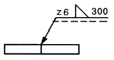
- 목길이 6mm, 용접길이 300mm인 화살표 쪽의 필릿 용접
- 목두께 6mm, 용접길이 300mm인 화살표 쪽의 필릿 용접
- 목길이 6mm, 용접길이 300mm인 화살표 반대 쪽의 필릿 용접
- 목두께 6mm, 용접길이 300mm인 화살표 반대 쪽의 필릿 용접
(정답률: 48%)
66. 그림과 같은 입체도를 제3각법으로 투상하였을 때, 가장 적합한 투상도는?
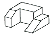
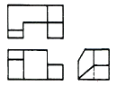
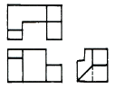
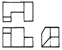
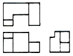
(정답률: 78%)
67. 그림과 같은 기어 간략도를 살펴볼 때 기어의 종류는?
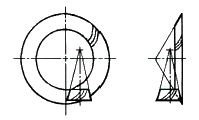
- 헬리컬 기어
- 스파이럴 베벨 기어
- 스크루 기어
- 하이포이드 기어
(정답률: 56%)
68. 축의 치수허용차 기호에서 위치수 허용차가 0인 공차역 기호는?
- b
- h
- g
- s
(정답률: 60%)
69. 그림과 같은 도면에서 테이퍼가 1/2 일 때 a의 지름은 몇 mm 인가?
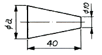
- 20
- 25
- 30
- 35
(정답률: 59%)
70. 나사 표시 “M15×1.5 – 6H/6g”에서 6H/6g는?
- 나사의 호칭치수
- 나사부의 길이
- 나사의 등급
- 나사의 피치
(정답률: 70%)
71. CNC선반 가공 시 주의사항으로 틀린 것은?
- 공작물을 견고하게 고정한다.
- 옷소매나 머리카락이 주축에 휘감기지 않도록 주의한다.
- 나사, 홈 가공 시는 주축회전수가 일정하게 되지 않도록 유의한다.
- 공구선정 및 가공 절삭조건에 주의하며, 단면 및 외경 가공 시 충돌에 유의한다.
(정답률: 85%)
72. CNC 프로그램의 보조기능에 해당되지 않는 것은?
- 절삭유 공급 여부
- 프로그램 시작지령
- 주축회전 방향 결정
- 보조프로그램 호출
(정답률: 67%)
73. 다음 그림의 A 점에서 B 점까지 각오하는 프로그램으로 옳은 것은?
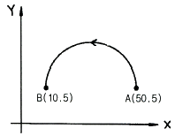
- G91 G03 X-30. I10. ;
- G91 G03 X-40. I-20. ;
- G91 G03 X10. Y5. J-20. ;
- G91 G03 X10. Y5. J-10. ;
(정답률: 66%)
74. 머시닝 센터에서 자동으로 공구를 교환해 주는 장치는?
- APC
- APT
- ATC
- TURRET
(정답률: 81%)
75. 고속가공의 일반적인 특징으로 틀린 것은?(오류 신고가 접수된 문제입니다. 반드시 정답과 해설을 확인하시기 바랍니다.)
- Burr 생성이 증가한다.
- 표면조도를 향상시킨다.
- 절삭저항이 저하되고 공구수명이 길어진다.
- 황삭부터 정삭까지 One-Setup 가공이 가능하다.
(정답률: 50%)
76. 다음 프로그램에서 가공물의 직경이 50 mm일 때 주축의 회전수는 약 몇 rpm 인가?
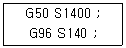
- 140
- 891
- 1400
- 8920
(정답률: 68%)
77. 다음 CNC 공작기계 구성 중 범용공작기계에서 사람이 직접 수동조작으로 하던 일을 대신하는 구성요소는?
- 서보기구
- 볼 스크루
- 정보처리 회로
- 테이블 및 컬럼
(정답률: 70%)
78. 머시닝센터에서 2날 엔드밀을 사용하여 이송속도(G94) F100으로 가공할대 엔드밀의 날 하나당 이송거리는 몇 mm 인가? (단, 주축의 회전수는 500 rpm 이다.)
- 0.⑤
- 0.1
- 0.2
- 0.25
(정답률: 55%)
79. 서보기구에 사용되는 회로방식 중 보정조건이 좋지 않은 기계에서 고정밀도를 요구할 때 사용되는 것은?
- 개방회로방식
- 반개방회로방식
- 반폐쇄회로방식
- 하이브리드 서보방식
(정답률: 60%)
80. CNC 선반에서 1.5초 휴지(dwell)하는 프로그램으로 틀린 것은?
- G04 X1.5
- G04 I1.5
- G04 U1.5
- G04 P1500
(정답률: 65%)